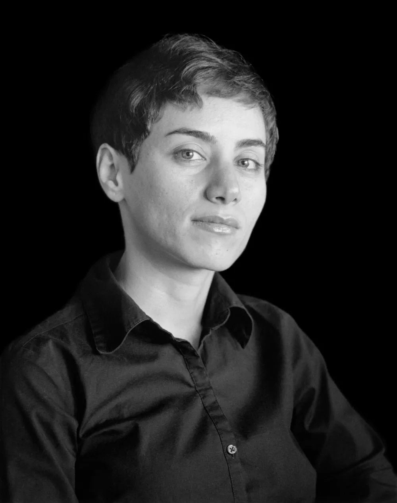

MARYAMIN MIRZAKHANI

Nata a Theran nel 1977. All’inizio voleva fare la scrittrice, ma al liceo capisce le sue capacità vincendo 2 medaglie d’oro Olimpiche della matematica diventando la prima donna iraniana a vincere. Dopo la laurea in Theran, va in America per un dottorato ad Harvard. Dopo un lavoro come ricercatrice alla Clay Mathemathics Institute e da insegnate a Princeton. Nel 2008 diventa professoressa nell’Università di Standford, in California.
Nel 2014 è stata la prima donna a ricevere la medaglia Fields, una specie di Nobel della matematica che viene considerato come uno di esso.
Purtroppo, nel 14 luglio 2017 a 40 anni è mancata a causa di un tumore al seno e dopo un anno dalla sua scomparsa la Confederazione Internazionale delle Donne Matematiche ha deciso che il 12 maggio, data della sua nascita, si festeggerà in tutto il mondo la giornata per le donne matematiche, nota come Giorno delle Matematiche.
Maryam Mirzakhani ha contribuito agli studi della geometria iperbolica, teoria ergodica e geometria simplettica.